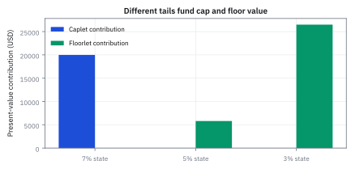
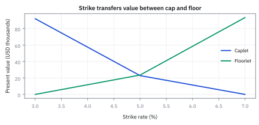
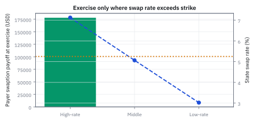

20.4 Caps, Floors, and Swaptions on the Lattice
caplet และ floorlet คือ option บนอัตราของงวดเดียวที่กำหนดวันหนึ่งแต่จ่ายอีกวันหนึ่ง swaption คือสิทธิ์เข้า swap ทั้งสัญญาครั้งเดียว ทั้งหมดตั้งราคาได้บนต้นไม้ของ short rate ถ้าวางนาฬิกาของเงินให้ถูก
บริษัทกู้ลอยตัว \$10,000,000 ดอกเบี้ยของงวดครึ่งปีจากปีที่ 1 ถึงปีที่ 1.5 จะกำหนดที่ปีที่ 1 ตาม short rate ของต้นไม้สามชั้น (7%, 5% หรือ 3% ที่ปีที่ 1 ตัวเลขสมมติ) และจ่ายที่ปีที่ 1.5 บริษัทอยากซื้อ caplet ที่ strike 5.25% ถ้าอัตราขึ้นเป็น 7% caplet จ่าย \$87,500 เพื่อนคูณด้วย state price ของจุด 7% คือ 0.236621 ได้ราคา \$20,704.36 ถูกไหม?
ลองตอบก่อนเปิดเฉลย
ไม่ถูก state price ย้ายเงินจากปีที่ 1 มาวันนี้ แต่ caplet จ่ายที่ปีที่ 1.5 ต้องคิดลดอีกครึ่งปีด้วยอัตรา 7% ของจุดนั้นก่อน: $87{,}500e^{-0.035}=\$84{,}490.47$ ที่ปีที่ 1 แล้วคูณ 0.236621 ได้ \$19,992.24 เพื่อนแพงไป \$712.12 เพราะนับเงินว่ามาเร็วไปหกเดือน
ภาพรวมก่อนลงสูตร
บริษัทที่กู้ลอยตัวกลัวอัตราขึ้นแรงจนจ่ายไม่ไหว แต่ไม่อยากล็อกอัตราคงที่ด้วย swap เพราะจะเสียโอกาสถ้าอัตราลง สินค้าที่ตอบตรง ๆ คือ cap: ชุดของ caplet ที่จ่ายส่วนที่อัตราเกินเพดานทีละงวด ด้านกลับกันคือ floor ที่จ่ายเมื่ออัตราต่ำกว่าพื้น และ swaption คือสิทธิ์ที่จะเข้า swap ทั้งสัญญาในวันหนึ่งข้างหน้า
ทั้งสามจ่ายเฉพาะบางสถานการณ์ จึงต้องรู้การกระจายของอัตรา ซึ่ง ต้นไม้ของ short rate และ state price ให้มาแล้ว รูปด้านล่างคือ payoff ของ caplet และ floorlet เทียบกับอัตราของงวด พร้อมจุดของต้นไม้สามจุดที่โจทย์เปิดหน้าใช้ ความยากของหน้านี้ไม่ได้อยู่ที่สูตร แต่อยู่ที่นาฬิกา: อัตรากำหนดวันหนึ่ง (reset) เงินจ่ายอีกวันหนึ่ง (payment) และสิทธิ์ใช้อีกวันหนึ่ง (exercise)
หน้านี้จะตั้งราคา caplet และ floorlet บนต้นไม้สามชั้น ตรวจด้วย cap–floor parity ที่ไม่ต้องเชื่อแบบจำลอง ตั้งราคา swaption แล้วย้ายไปต้นไม้ 6% ห้างวดเพื่อตั้งราคา caplet, swap, swaption และ swap ที่เริ่มในอนาคต ปิดด้วย swaption บนต้นไม้ BDT สองต้นที่ fit curve เท่ากันแต่ราคาต่างกันเกือบครึ่ง
รูป — payoff ของ caplet และ floorlet ประกบกันที่ strike
ศัพท์ที่ใช้ในหัวข้อนี้
- Caplet และ cap
- caplet คือ option ของงวดดอกเบี้ยเดียว จ่ายส่วนที่อัตราเกิน strike คูณเงินต้นและความยาวงวด เหมือน call บนอัตรา cap คือ caplet หลายงวดที่ strike เดียวกัน ผู้กู้ลอยตัวซื้อเพื่อจำกัดเพดานต้นทุน
- Floorlet และ floor
- ด้านตรงข้ามของ caplet จ่ายเมื่ออัตราต่ำกว่า strike เหมือน put บนอัตรา ผู้ให้กู้หรือผู้ถือเงินฝากลอยตัวซื้อเพื่อกันรายรับไม่ให้ต่ำเกินไป
- Reset date และ payment date
- reset date คือวันที่อัตราของงวดถูกกำหนด payment date คือวันที่เงินของงวดนั้นจ่ายจริง ซึ่งมักอยู่ปลายงวด (settled in arrears) สองวันนี้ต้องแยกกันทุกครั้งที่คิดลด
- Payer และ receiver swaption
- สิทธิ์เข้า swap ในอนาคตที่อัตราคงที่ $K$ payer คือสิทธิ์เป็นฝั่งจ่ายคงที่ มีค่าเมื่อ swap rate ตอนนั้นสูงกว่า $K$ receiver คือกลับกัน ใช้ล็อกต้นทุนของเงินกู้ที่จะเกิดในอนาคต
- Cap–floor parity
- ซื้อ caplet ขาย floorlet ที่ strike เดียวกัน ได้เงินเท่า FRA พอดีทุกกรณี จึงตั้งราคาผลต่างได้จาก curve โดยไม่ต้องใช้แบบจำลองความผันผวน ใช้ตรวจโค้ดตั้งราคา
- Forward-start swap
- swap ที่ตกลงวันนี้แต่เริ่มงวดแรกในอนาคต ตั้งราคาได้ด้วย state price ของทุกจุดที่มันจ่าย
สัญลักษณ์และหน่วย
| สัญลักษณ์ | ความหมาย | หน่วย |
|---|---|---|
| $N,\ \delta,\ K$ | เงินต้น ความยาวงวด และ strike | ดอลลาร์, ปี, ต่อปี |
| $r_j,\ L_j$ | short rate ของจุด $j$ และอัตราที่สัญญาเขียนไว้ว่าจะจ่าย | ต่อปี |
| $Q_j$ | state price ของจุด $j$ ที่วัน reset | ดอลลาร์วันนี้ต่อดอลลาร์ที่จุดนั้น |
| $P_j$ | ราคาที่วัน reset ของ \$1 ที่จ่ายปลายงวด $=e^{-r_j\delta}$ | ดอลลาร์ต่อดอลลาร์ |
| $A_j,\ S_j$ | annuity และ par swap rate ของ swap ที่จุด $j$ | ปี, ต่อปี |
| $\Pi,\ V_0$ | payoff ของสัญญา และราคาวันนี้ | ดอลลาร์ |
| $E_{i,j}$ | state price บนต้นไม้ 6% ทบต่องวด | ดอลลาร์ต่อดอลลาร์ |
ขั้นที่ 1 — caplet และ floorlet: จ่ายเท่าไร และจ่ายเมื่อไร
เริ่มจากนิยามของสัญญา อัตรา $L$ ของงวดถูกกำหนดที่วัน reset $T$ แต่เงินจ่ายที่ปลายงวด $T+\delta$ caplet จ่ายส่วนที่อัตราเกิน strike เฉพาะเมื่อเป็นบวก เพราะเป็นสิทธิ์ ไม่ใช่ภาระ floorlet จ่ายกลับทาง คูณ $\delta$ เพื่อแปลงอัตราต่อปีเป็นอัตราของงวด แล้วคูณเงินต้น
caplet คือ call บนอัตรา floorlet คือ put บนอัตรา ตัวอย่างของหน้านี้: $N=\$10$ ล้าน $\delta=0.5$ $K=5.25\%$ reset ปีที่ 1 จ่ายปีที่ 1.5 เพื่อให้เห็นกลไกชัด สัญญาฝึกนี้จ่ายตาม short rate ของต้นไม้ตรง ๆ คือ $L_j=r_j$ สัญญาจริงจ่ายตามอัตรา simple ของงวด ตอนตรวจด้วย parity จะแปลงให้ดูว่าตัวเลขเปลี่ยนเท่าไร
ที่จุด 7%: $10^7(0.5)(0.07-0.0525)=87{,}500$ ที่จุด 5% และ 3% caplet จ่ายศูนย์ ส่วน floorlet จ่าย $10^7(0.5)(0.0025)=12{,}500$ และ $10^7(0.5)(0.0225)=112{,}500$ ตรงกับสามจุดในรูปด้านบน
ขั้นที่ 2 — ราคา caplet: คิดลดสองช่วง ช่วงหนึ่งอยู่ใน state price อีกช่วงต้องใส่เอง
state price ย้ายเงินจากวัน reset (ปีที่ 1) มาวันนี้ แต่ caplet จ่ายที่ปีที่ 1.5 เงินก้อนนั้นรู้ค่าแน่นอนตั้งแต่ปีที่ 1 จึงคิดลดครึ่งปีด้วยอัตราของจุดนั้นเองก่อน แล้วค่อยคูณ state price รูปเส้นเวลาด้านล่างแสดงสองช่วงนี้
จุด 5% และ 3% ไม่เกิน strike จึงจ่ายศูนย์ มีแค่จุด 7% ที่เหลือ การคิดลดช่วง 1 ถึง 1.5 ใช้อัตรา 7% ของจุดนั้น ไม่ใช่อัตราวันนี้ เพราะในโลกที่อัตราขึ้นเป็น 7% เงินครึ่งปีหลังก็ถูกคิดลดด้วย 7% บนต้นไม้แบบทบต่องวด วิธีเดียวกันเขียนว่า caplet ที่จ่าย $(r_{\tau-1}-K)^+$ ที่งวด $\tau$ มีค่า $(r_{\tau-1}-K)^+/(1+r_{\tau-1})$ ที่งวด $\tau-1$
ถ้าลืมช่วงที่สองจะได้ \$20,704.36 แบบโจทย์เปิดหน้า แพงไปเสมอ ไม่ใช่แพงบ้างถูกบ้าง ความผิดชนิดนี้มองไม่เห็นจนกว่าจะเทียบกับตลาด
รูป — นาฬิกาของเงิน caplet: ถอยสองช่วงด้วยสองตัวคูณ
ขั้นที่ 3 — floorlet ที่ strike เดียวกัน
โจทย์ให้อะไรมาบ้าง: สัญญาเดียวกับ caplet แต่จ่าย $N\delta(K-L)^+$ state price ของจุด 7%, 5% และ 3% คือ 0.236621, 0.475621 และ 0.238999
คำตอบ: \$32,285.60 จุด 7% ไม่จ่าย จุด 5% จ่ายน้อย และจุด 3% จ่ายเก้าเท่าของจุด 5% จึงเป็นที่มาของมูลค่า 82% floorlet แพงกว่า caplet ที่ strike เดียวกันเพราะ strike 5.25% อยู่สูงกว่ากลางต้นไม้
ตรวจเองใน 10 วินาที: $10^7(0.5)(0.0525-0.03)=112{,}500$ คูณ state price ราว 0.24 กับ discount ราว 0.985 ได้ราว \$26,500
รูป — มูลค่ามาจากจุดไหนของต้นไม้

แท่งน้ำเงินคือส่วนของ caplet: \$19,992.24 ทั้งหมดจากจุด 7% แท่งเขียวคือส่วนของ floorlet ที่จุด 5% และ 3% (\$5,798.47 และ \$26,487.13 ภาพปัดเศษตอนวาดคลาดไม่ถึงหนึ่งดอลลาร์) ราคาเดียวซ่อนว่าความเสี่ยงอยู่ที่ปลายไหนของต้นไม้ ภาพแบบนี้บอกได้
ขั้นที่ 4 — cap–floor parity และสัญญาที่จ่ายอัตรา simple
ซื้อ caplet ขาย floorlet ที่ strike เดียวกัน ไล่สองกรณี: อัตราเกิน strike ได้ $L-K$ จากตัวแรก อัตราต่ำกว่าจ่าย $K-L$ ให้ตัวที่สอง ซึ่งคือได้ $L-K$ ที่ติดลบ ทุกกรณีได้ $L-K$ เป็นเส้นตรง (ในรูปแรก เส้นส้มลบเส้นเขียวคือเส้นตรงเส้นเดียว) ถ้าสัญญาจ่ายอัตรา simple $L_j=(1/P_j-1)/\delta$ แบบตลาดจริง ผลต่างนี้คือ FRA ซึ่งตั้งราคาได้จาก curve อย่างเดียว
สัญญาฝึก (จ่าย $r_j$) ให้ผลต่าง −12,293.36 ซึ่งตรงกับ $\sum_jQ_jP_jN\delta(r_j-K)$ แต่ $r_j$ ไม่ใช่อัตราที่ซื้อขายได้ ผลต่างจึงยังขึ้นกับต้นไม้ สัญญาตลาดจ่าย $L_j$ = 7.1239%, 5.0630% และ 3.0226% ได้ caplet \$21,408.17 และ floorlet \$30,557.62
ทำไมแถวสุดท้ายใช้แค่ curve? เพราะ $N\delta L_j$ ที่ปลายงวดมีค่าที่วัน reset เท่ากับ $N(1-P_j)$ พอดี (ขาลอยตัวหนึ่งงวด) คูณ state price แล้วบวกได้ $N[D(0,1)-D(0,1.5)]$ ส่วน $N\delta K$ เป็นเงินแน่นอนที่ปีที่ 1.5 มีค่า $N\delta K\,D(0,1.5)$ ใส่ $D(0,1)=0.951241$ และ $D(0,1.5)=0.927801$ ได้ −9,149.45 ตรงกับผลต่างที่เดินต้นไม้ ไม่มีความผันผวนเลย ถ้าโค้ดให้ผลต่างอื่น แปลว่ามีบั๊กเรื่องเครื่องหมาย วันจ่าย หรือกติกาอัตรา
รูป — strike ย้ายมูลค่าจาก caplet ไป floorlet

แกนนอนคือ strike 3% ถึง 7% แกนตั้งคือราคาวันนี้เป็นพันดอลลาร์ บนต้นไม้สามชั้นกับสัญญาฝึกที่จ่าย $r_j$ ที่ 5.25% ได้ 19.99 และ 32.29 caplet ลดลงและ floorlet เพิ่มขึ้น ผลต่างของสองเส้นเปลี่ยนด้วยความชันคงที่ ($N\delta$ คูณผลบวกของ $Q_jP_j$ คือ \$46,390 ต่อทุก 1 จุด) สองเส้นตัดกันที่ strike 4.985% ซึ่งทำให้ผลต่างตาม parity เป็นศูนย์
ขั้นที่ 5 — payer swaption: ตัดสินใจครั้งเดียวกับ swap ทั้งสัญญา
swaption ที่ปีที่ 1 ให้สิทธิ์เข้า swap อายุ 1 ปี จ่ายคงที่ $K=5.25\%$ รับลอยตัวทุกครึ่งปี ที่วันใช้สิทธิ์ swap ทั้งสัญญามีค่าเท่าส่วนต่างของ swap rate ตลาดกับ $K$ คูณ annuity เพื่อให้คิดด้วยมือได้ สมมติว่าหลังวันใช้สิทธิ์ curve แบนที่อัตราของจุดนั้น
$S_j$ คือสูตร par swap rate $(1-D_n)/A_n$ ตรง ๆ จุดกลางและจุดล่างได้ 5.0630% และ 3.0226% ต่ำกว่า $K$ จึงไม่ใช้สิทธิ์ บนเส้นแบนที่มีสองงวด swap rate เท่ากับอัตรา simple ของงวดเดียวพอดี ตัวเลขจึงตรงกับ $L_j$ ของสัญญาตลาด payoff อยู่ที่วันใช้สิทธิ์แล้ว จึงคูณ state price ได้เลยโดยไม่คิดลดเพิ่ม (annuity ทำหน้าที่คิดลดงวดหลังไปแล้ว)
receiver swaption ที่ $K$ เดียวกันจ่ายที่จุด 5% และ 3% ได้ \$60,617.79 ผลต่าง payer ลบ receiver คือ −18,537.77 เท่ากับมูลค่าวันนี้ของ swap ที่เริ่มปีที่ 1 แบบเดียวกับ cap–floor parity
รูป — ใช้สิทธิ์เฉพาะจุดที่ swap rate เกิน strike

แท่ง (แกนซ้าย) คือ payoff ที่วันใช้สิทธิ์: \$177,837 ที่จุดอัตราสูง ศูนย์ที่จุดกลางและจุดล่าง เส้นประจุดกลม (แกนขวา) คือ swap rate ของสามจุด 7.12394, 5.06302 และ 3.02261% เส้นจุดแนวนอนคือ strike 5.25% ถ้าใช้สิทธิ์ได้หลายวัน (Bermudan) ต้องเทียบใช้ทันทีกับถือต่อทุกวันที่ใช้สิทธิ์ได้ แบบเดียวกับ put อเมริกันบนพันธบัตร
ขั้นที่ 6 — ต้นไม้ 6% ห้างวด: caplet strike 2% ที่จ่ายงวดที่ 6
ย้ายไปต้นไม้ที่ใหญ่ขึ้น: short rate เริ่ม 6% ขึ้นคูณ 1.25 ลงคูณ 0.9 ทบต่องวด (ต้นไม้เดียวกับที่ใช้ตั้งราคา zero ใน หน้าต้นไม้ของ short rate) caplet จ่าย $(r_5-0.02)^+$ ต่อเงินต้น \$1 ที่งวดที่ 6 อัตรา $r_5$ รู้ตั้งแต่งวดที่ 5 จึงบันทึกเงินก้อนนั้นไว้ที่จุดงวดที่ 5 โดยคิดลดหนึ่งงวดด้วยอัตราของจุดนั้น แล้วเดินย้อนตามปกติ
การบันทึกเงินไว้ที่จุดก่อนหน้าทำให้ไม่ต้องสร้างชั้นที่ 6 ของต้นไม้เลย จุดล่างสุดของงวดที่ 5 มีอัตรา 3.54% ยังสูงกว่า strike 2% caplet นี้จึงจ่ายทุกกรณี จุดบนสุด (18.31%) ได้ 0.1379 ต่อ \$1 ราคาวันนี้ 0.0420 ต่อ \$1 หรือราว \$42,000 ต่อเงินต้น \$1 ล้าน รูปด้านล่างคือตัวเลขทุกจุด
รูป — ราคา caplet strike 2% เติมจากขวาไปซ้าย
ขั้นที่ 7 — swap บนต้นไม้เดียวกัน และ cap ลบ floor เท่ากับ swap
swap หกงวด จ่ายคงที่ 5% รับลอยตัว เงินของงวด $i+1$ คือ $r_{i,j}-0.05$ ซึ่งรู้ตั้งแต่งวด $i$ บันทึกไว้ที่จุดงวด $i$ คิดลดหนึ่งงวด และต่างจาก option ตรงที่ต้องบวกค่าเฉลี่ยของสองลูก $\bar V_{i+1}$ ด้วย เพราะ swap ยังมีเงินงวดต่อ ๆ ไปอยู่ในมือ
ในแถวของ $V_{2,2}$ ตัวเลข 0.04375 คือ $9.375\%-5\%$ และ 0.28133 คือผลบวกของสองลูก 0.17927 กับ 0.10206 ต้นไม้นี้ลอยสูงกว่า 5% เป็นส่วนใหญ่ ฝั่งรับลอยตัวจึงได้เปรียบ 0.0990 ต่อ \$1 จุดล่างสุดของงวดที่ 3 ติดลบ (−0.0085) เพราะอัตรา 4.37% ต่ำกว่า 5%
cap ที่ strike 5% บนหกงวดเดียวกันมีราคา 0.100902 floor มีราคา 0.001898 ลบกันได้ 0.099004 เท่ากับ swap ทุกหลัก นี่คือ cap–floor parity ต่อกันทุกงวด ถ้า strike เท่ากับ swap rate ตลาด swap มีค่าศูนย์ และ cap กับ floor ต้องราคาเท่ากัน มุมกลับคือคำตอบว่าทำไมผู้กู้ไม่ซื้อ swap ไปเลย: swap ล็อกทั้งขาขึ้นและขาลง cap กันขาขึ้นอย่างเดียว ส่วนต่าง 0.0019 คือราคาของขาลงที่ผู้กู้เก็บไว้ ซึ่งก็คือราคา floor
ขั้นที่ 8 — swaption ที่งวดที่ 3 และทำไมไม่แพงกว่า cap
โจทย์ให้อะไรมาบ้าง: สิทธิ์เข้า swap จ่ายคงที่ 5% ที่เพิ่งตีราคา ที่งวดที่ 3 โดยไม่ต้องจ่ายอะไรตอนเข้า (strike ของ option เป็นศูนย์ อย่าสับสนกับอัตราคงที่ 5% ของ swap) ครอบเงินงวดที่ 4 ถึง 6 ค่า swap ที่งวดที่ 3 คือ −0.0085, 0.0400, 0.1021 และ 0.1793 (อัตราต่ำไปสูง) ก่อนใช้สิทธิ์ ผู้ถือยังไม่ได้เงินของ swap จึงเดินย้อนโดยไม่บวกเงินรายงวด
คำตอบ: swaption ราคา 0.0620 ต่อ \$1 cap ที่ strike 5% บนสามงวดเดียวกันราคา 0.0627 แพงกว่า \$695.67 ต่อ \$1 ล้าน เหตุผลอยู่ในแถวสุดท้าย: ที่วันใช้สิทธิ์ ให้ $X_i$ คือค่าของเงินงวดที่ $i$ ของ swap caplet แต่ละตัวมีค่าอย่างน้อย $X_i^+$ ส่วน swaption ได้แค่ $(\sum X_i)^+$ ซึ่งไม่เกินผลบวกของส่วนบวก cap เลือกได้ทีละงวด swaption ต้องรับทั้งงวดดีและงวดแย่ในครั้งเดียว ส่วนต่างเล็กในตัวอย่างนี้เพราะที่จุดส่วนใหญ่ทุกงวดของ swap เป็นบวกอยู่แล้ว
ตรวจเองใน 10 วินาที: swaption ต้องไม่แพงกว่าการได้ swap ทั้งสัญญาฟรี ซึ่งมีค่า 0.0990 และต้องไม่ถูกกว่าศูนย์ 0.0620 อยู่ระหว่างนั้น
รูป — swaption: ตัดที่วันใช้สิทธิ์ แล้วเดินย้อนโดยไม่มีเงินรายงวด
ขั้นที่ 9 — swap ที่เริ่มในอนาคต: คูณ state price ได้เลย
swap เริ่มงวดที่ 1 จบงวดที่ 3 เงินต้น \$1,000,000 รับคงที่ 7% จ่ายลอยตัว เงินงวดที่ 2 และ 3 ใช้อัตราของงวดที่ 1 และ 2 เงินแต่ละก้อนรู้ค่าก่อนหนึ่งงวด จึงคิดลดหนึ่งงวดด้วยอัตราของจุดนั้นแล้วคูณ state price $E_{i,j}$ ของจุดนั้น ไม่ต้องเดินย้อนทั้งต้นไม้
ห้าจุดคือ งวดที่ 1 อัตรา 5.40% และ 7.50% (state price 0.4717 ทั้งคู่) และงวดที่ 2 อัตรา 4.86%, 6.75% และ 9.375% (state price 0.2238, 0.4432 และ 0.2194) state price หาด้วย forward equations แบบทบต่องวด เช่น $0.4432=0.4717/[2(1.054)]+0.4717/[2(1.075)]$ จุดที่อัตราเกิน 7% ติดลบสำหรับฝั่งรับคงที่ ผลรวม \$5,807.06 ถ้าปัดเป็นหลักร้อยได้ราว \$5,800
ขั้นที่ 10 — swaption บน BDT สองต้นที่ fit curve เท่ากัน
ต้นไม้ BDT ที่วางอัตราแบบ $r_{i,j}=a_ie^{bj}$ fit เส้น spot 10 ปีเดียวกันได้พอดีทั้งที่ $b=0.005$ และ $b=0.01$ (ดู การ calibrate BDT) ตั้งราคาสิทธิ์ที่ปีที่ 2 จะเข้า swap 8 ปี จ่ายคงที่ 11.65% รับลอยตัว (เงินปีที่ 3 ถึง 10 ใช้อัตราของปีก่อนหน้า) บนเงินต้น \$1 ล้าน: ตีราคา swap ย้อนจากปีที่ 10 ถึงปีที่ 2 ตัดด้วย $\max(0,\cdot)$ แล้วเดินย้อนต่อมาวันนี้
สองต้นไม้ให้ราคา zero ทั้งสิบตัวตรงตลาด แต่ swaption ต่างกัน 46.5% เพราะ option ขึ้นกับความผันผวน ซึ่งราคา zero ไม่บอกเลย และอย่าลืม calibrate ระดับ $a_i$ ใหม่ทุกครั้งที่เปลี่ยน $b$ ตราสารที่ใช้ calibrate จึงต้องหน้าตาใกล้ของที่จะตั้งราคา จะตั้งราคา swaption ต้อง calibrate กับ cap, floor หรือ swaption ที่ตลาดมีราคา
งานจริงเลือกพารามิเตอร์ $\theta$ ด้วย $J(\theta)$: $w_i$ ให้น้ำหนักตามความเชื่อถือในราคาตลาดของตราสารนั้น $\lambda$ ลงโทษการขยับจากค่าที่ calibrate ครั้งก่อน ตัวอย่างของเล่น: ราคาตลาด 1.10 และ 1.20 ค่าครั้งก่อน 1.00 และราคาแบบจำลองเท่ากับ $\theta$ ถ้า $\lambda=0$ ได้ $\theta=1.15$ ถ้า $\lambda=1$ ได้ $(1.10+1.20+1.00)/3=1.10$ ปัญหาจริงไม่ convex มี จุดต่ำสุดเฉพาะที่ หลายจุด และต้องทำใหม่หลายครั้งต่อวัน
ความผิดที่ให้คำตอบผิดแบบเงียบ ๆ
จ่าย caplet ที่วัน reset: ข้ามการคิดลดครึ่งปีได้ \$20,704.36 แทน \$19,992.24 แพงไป \$712.12 ทุกครั้ง
สับสนอัตราของต้นไม้กับอัตราในสัญญา: สัญญาที่จ่ายอัตรา simple มี caplet \$21,408.17 ไม่ใช่ \$19,992.24 ต่างกัน \$1,415.93 เพราะที่จุด 7% อัตรา simple คือ 7.1239%
ลืม annuity ของ swaption: ใช้ $N(S-K)^+$ แทน $NA(S-K)^+$ ได้ \$44,341.45 แทน \$42,080.02 ส่วนต่างของอัตราจ่ายหลายงวดในอนาคต ต้องคิดลดทุกงวด
บวกเงินของ swap ก่อนวันใช้สิทธิ์: ถ้าเดินย้อนจากงวดที่ 3 แล้วบวกเงินรายงวดด้วย ได้ 0.0999 แทน 0.0620 แพงไป \$37,936 ต่อ \$1 ล้าน ผู้ถือสิทธิ์ยังไม่ได้เงินเหล่านั้น
calibrate กับ curve อย่างเดียว: $b=0.005$ กับ $b=0.01$ fit curve เท่ากันแต่ swaption ต่างกัน \$622.36 ต่อ \$1 ล้าน หรือ 46.5%
ใช้ทำอะไรบนโต๊ะจริง
ธนาคารขาย cap ให้บริษัทที่กู้ลอยตัว และขาย floor ให้ผู้ที่มีรายรับลอยตัว swaption ใช้กับบริษัทที่รู้ว่าจะกู้หรือออกหุ้นกู้ในอนาคต ซึ่งความเสี่ยงคือการต้องทำ swap ทั้งสัญญา swaption ตรงกับความเสี่ยงนั้นพอดีและถูกกว่า cap ที่จ่ายเพิ่มสำหรับการเลือกทีละงวด พันธบัตรหรือเงินกู้ที่ไถ่ถอนก่อนได้ก็มีสิทธิ์แบบ swaption ฝังอยู่
ตลาด quote cap และ swaption ด้วยความผันผวนของสูตรแบบ Black (ญาติของ สูตร Black–Scholes ที่ใช้กับ forward) ทีละ caplet หรือ swaption ต้นไม้มีข้อดีคือใช้ได้กับสิทธิ์ที่ใช้ได้หลายวัน และให้ราคาทุกตัวจากแบบจำลองเดียวที่ fit curve อยู่แล้ว โต๊ะเก็บวัน reset วันจ่าย และวันใช้สิทธิ์แยกกันในระบบ ตรวจ parity ตรวจว่าราคาไม่ติดลบ ตรวจว่าราคาไม่เปลี่ยนเมื่อซอยงวดถี่ขึ้น แล้วรายงานความไวต่อ curve ความผันผวน และ strike แยกกัน ข้อจำกัดที่ต้องจำ: ต้นไม้ปัจจัยเดียวให้ทุกอายุขยับไปด้วยกัน แต่ ข้อมูลจริงของ swap แต่ละอายุ บอกว่ามันไม่ได้สัมพันธ์กันสมบูรณ์ swaption อายุยาวจึงอาจถูกตั้งราคาผิดแม้ caplet ตรงตลาด
โจทย์ตรวจความเข้าใจ
1. บนต้นไม้สามชั้นของโจทย์เปิดหน้า caplet ที่ strike 4.5% (สัญญาฝึก จ่าย $r_j$) ราคาเท่าไร?
เฉลย
จุด 7%: $10^7(0.5)(0.025)=125{,}000$ จุด 5%: $10^7(0.5)(0.005)=25{,}000$ ราคา $0.236621(0.965605)(125{,}000)+0.475621(0.975310)(25{,}000)=28{,}560.35+11{,}596.94=\$40{,}157.29$
2. ใช้ cap–floor parity กับสัญญาที่จ่ายอัตรา simple: ถ้า caplet ราคา \$21,408.17 floorlet ต้องราคาเท่าไร โดยไม่ต้องเดินต้นไม้?
เฉลย
$F_L=C_L-N[D(0,1)-(1+\delta K)D(0,1.5)]=21{,}408.17+9{,}149.45=\$30{,}557.62$ ใช้แค่ $D(0,1)=0.951241$ และ $D(0,1.5)=0.927801$ ตรงกับการเดินต้นไม้
3. บนต้นไม้ 6% ถ้ารู้แค่ว่า cap ที่ strike 5% บนหกงวดราคา 0.100902 ต่อ \$1 และ swap จ่ายคงที่ 5% มีค่า 0.099004 floor ที่ strike เดียวกันราคาเท่าไร?
เฉลย
parity ทุกงวด: cap − floor = swap จึงได้ floor $=0.100902-0.099004=0.001898$ ต่อ \$1 หรือ \$1,898 ต่อ \$1 ล้าน ตรงกับการเดินต้นไม้ทีละ floorlet floor ถูกมากเพราะต้นไม้นี้ต่ำกว่า 5% แค่ที่จุดล่าง ๆ ไม่กี่จุด ซึ่งมี state price น้อย
คำนวณซ้ำด้วย JavaScript
เปิดดูโค้ด
const {exp, max} = Math;
// One-period rate option on the three-layer tree: rate fixed at the reset layer, paid delta later, discounted with the node rate.
function rateOption(Q, r, {N, delta, K, kind, simple = false}) {
const P = r.map(x => exp(-x * delta)); // value at reset of $1 paid at period end
const L = simple ? P.map(p => (1 / p - 1) / delta) : r; // rate written in the contract
const pay = L.map(l => N * delta * (kind === 'cap' ? max(l - K, 0) : kind === 'floor' ? max(K - l, 0) : l - K));
const parts = pay.map((x, j) => Q[j] * P[j] * x);
return {L, pay, parts, value: parts.reduce((s, x) => s + x, 0)};
}
// Swaption on a two-payment half-yearly swap starting at the exercise layer, curve flat at the node rate after exercise.
function swaption(Q, r, {N, K, payer = true}) {
const A = r.map(x => 0.5 * exp(-0.5 * x) + 0.5 * exp(-x));
const S = r.map((x, j) => (1 - exp(-x)) / A[j]);
const pay = S.map((s, j) => N * A[j] * max(payer ? s - K : K - s, 0));
return {A, S, pay, value: pay.reduce((s, x, j) => s + x * Q[j], 0)};
}
// Per-period lattice, q = 1/2, j counts up moves.
const tree = (r0, u, d, n) => Array.from({length: n}, (_, i) => Array.from({length: i + 1}, (_, j) => r0 * u ** j * d ** (i - j)));
const step = (R, i, V, cash = () => 0) => R[i].map((x, j) => (cash(x) + 0.5 * (V[j] + V[j + 1])) / (1 + x));
// Value today of a payment f(r_i) made at i + 1 and fixed at layer i (recorded at layer i, then rolled back).
function inArrears(R, i, f) {
let V = R[i].map(x => f(x) / (1 + x));
for (let k = i - 1; k >= 0; k--) V = step(R, k, V);
return V[0];
}
function swapLayers(R, K) {
const last = R.length - 1, out = [];
let V = R[last].map(x => (x - K) / (1 + x)); out[last] = V;
for (let i = last - 1; i >= 0; i--) { V = step(R, i, V, x => x - K); out[i] = V; }
return out;
}
function statePrices(R, n) {
const E = [[1]];
for (let k = 0; k < n; k++) {
const next = Array(k + 2).fill(0);
E[k].forEach((e, j) => { const v = e / (2 * (1 + R[k][j])); next[j] += v; next[j + 1] += v; });
E.push(next);
}
return E;
}
// BDT (per-period, b fixed) calibrated to a spot curve, then a payer swaption: exercise at `expiry`, payments expiry + 1 .. n.
function bdtSwaption(spot, b, K, expiry) {
let E = [1]; const R = [];
spot.forEach((s, i) => {
const target = (1 + s) ** -(i + 1);
let lo = 0, hi = 1;
for (let k = 0; k < 200; k++) {
const m = (lo + hi) / 2;
if (E.reduce((sum, e, j) => sum + e / (1 + m * exp(b * j)), 0) > target) lo = m; else hi = m;
}
R.push(E.map((_, j) => (lo + hi) / 2 * exp(b * j)));
const next = Array(i + 2).fill(0);
E.forEach((e, j) => { const v = e / (2 * (1 + R[i][j])); next[j] += v; next[j + 1] += v; });
E = next;
});
let V = R[R.length - 1].map(x => (x - K) / (1 + x));
for (let i = R.length - 2; i >= expiry; i--) V = step(R, i, V, x => x - K);
let W = V.map(v => max(v, 0));
for (let i = expiry - 1; i >= 0; i--) W = step(R, i, W);
return W[0];
}
// Three-layer tree at year 1 (rates 7%, 5%, 3%; state prices from the forward equations).
const Q = [0.23662128698837095, 0.47562065744664594, 0.23899937045827496], r = [0.07, 0.05, 0.03];
const deal = {N: 1e7, delta: 0.5, K: 0.0525};
const cap = rateOption(Q, r, {...deal, kind: 'cap'}), floor = rateOption(Q, r, {...deal, kind: 'floor'});
const capL = rateOption(Q, r, {...deal, kind: 'cap', simple: true}), floorL = rateOption(Q, r, {...deal, kind: 'floor', simple: true});
const D1 = Q.reduce((s, q) => s + q, 0), D15 = Q.reduce((s, q, j) => s + q * exp(-r[j] * 0.5), 0);
// 6% tree: up x1.25, down x0.9, six layers.
const R = tree(0.06, 1.25, 0.9, 6);
const sw = swapLayers(R, 0.05);
let W = sw[3].map(v => max(v, 0)); for (let i = 2; i >= 0; i--) W = step(R, i, W);
const capOn = (from, K) => [0, 1, 2, 3, 4, 5].filter(i => i >= from).reduce((s, i) => s + inArrears(R, i, x => max(x - K, 0)), 0);
const floorAll = [0, 1, 2, 3, 4, 5].reduce((s, i) => s + inArrears(R, i, x => max(0.05 - x, 0)), 0);
const E = statePrices(R, 2);
const fwdStart = [1, 2].reduce((s, i) => s + R[i].reduce((t, x, j) => t + (0.07 - x) / (1 + x) * E[i][j], 0), 0);
const spot = [7.30, 7.62, 8.10, 8.45, 9.20, 9.64, 10.12, 10.45, 10.75, 11.22].map(x => x / 100);
const b005 = bdtSwaption(spot, 0.005, 0.1165, 2), b01 = bdtSwaption(spot, 0.01, 0.1165, 2);
console.log(JSON.stringify({
cap: cap.value, floor: floor.value, parity: cap.value - floor.value, resetDateMistake: Q[0] * cap.pay[0],
market: {L: capL.L, cap: capL.value, floor: floorL.value, parity: capL.value - floorL.value,
curve: 1e7 * (D1 - (1 + 0.5 * 0.0525) * D15)},
payer: swaption(Q, r, {N: 1e7, K: 0.0525}).value, receiver: swaption(Q, r, {N: 1e7, K: 0.0525, payer: false}).value,
sixPercentTree: {caplet: inArrears(R, 5, x => max(x - 0.02, 0)), swap: sw[0][0], swap3: sw[3], swaption: W[0],
cap456: capOn(3, 0.05), capAll: capOn(0, 0.05), floorAll, fwdStart: 1e6 * fwdStart},
bdt: {b005: 1e6 * b005, b01: 1e6 * b01, ratio: b01 / b005},
calibration: {noAnchor: (1.10 + 1.20) / 2, anchored: (1.10 + 1.20 + 1.00) / 3}
}));สิ่งที่ควรตอบได้หลังอ่าน
- caplet กำหนดอัตราที่วัน reset แต่จ่ายปลายงวด ราคาคือ state price ถึงวัน reset คูณ discount ของงวดสุดท้ายด้วยอัตราของจุดนั้น: \$19,992.24 ไม่ใช่ \$20,704.36
- floorlet ที่ strike เดียวกันราคา \$32,285.60 และ caplet ลบ floorlet เท่ากับ FRA ซึ่งตั้งราคาได้จาก curve อย่างเดียว (−9,149.45 สำหรับสัญญาที่จ่ายอัตรา simple)
- swaption จ่าย $NA(S-K)^+$ ที่วันใช้สิทธิ์: \$42,080.02 บนต้นไม้สามชั้น และไม่แพงกว่า cap บนงวดเดียวกัน (0.0620 เทียบ 0.0627 บนต้นไม้ 6%)
- บนต้นไม้ 6% caplet strike 2% ราคา 0.0420 swap จ่ายคงที่ 5% มีค่า 0.0990 เท่ากับ cap ลบ floor และ swap ที่เริ่มในอนาคตมีค่า \$5,807
- ต้นไม้สองต้นที่ fit curve เท่ากันให้ swaption \$1,339 กับ \$1,962 ความผันผวนต้อง calibrate กับราคา option ด้วย least squares ที่มีน้ำหนักและตัวถ่วง
หน้าถัดไป การ calibrate Vasicek และ CIR เปลี่ยนจากต้นไม้เป็นแบบจำลองเวลาต่อเนื่อง แล้ว calibrate กับอัตราตลาดจริงของสองวัน ดูว่าพารามิเตอร์สี่ตัว fit curve ได้แค่ไหน และส่วนที่เหลือบอกอะไร